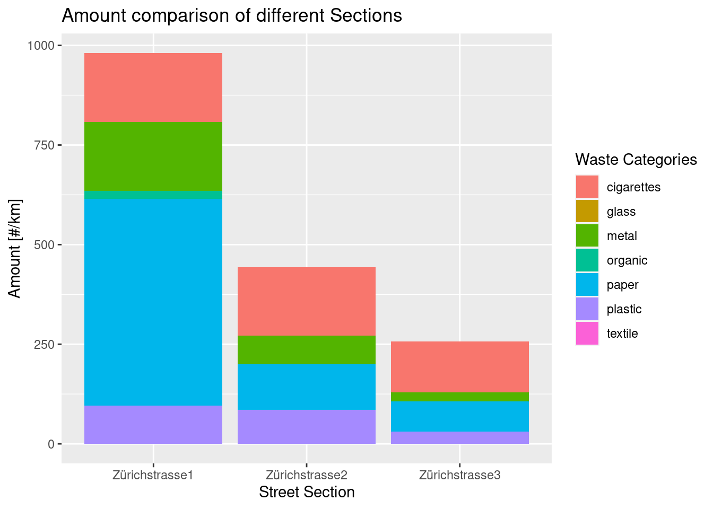

![]()
suppressMessages(library(tidyverse))
library(ggthemes)
library(ggridges)
library(gt)How does littered trash differ in amount and composition, when being picked up from the greeneries next to a rural road in the same day, comparing three sections with different vicinities to the city?
Introduction
Between villages and cities there are often rural roads, which are rarely frequented by pedestrians, but experience rather high amounts of car traffic. Usually these streets have a parallel running footway with green patches in between, and roughly one meter of grass on either side, bordering a field or forest. These patches can not be accessed by the usual road sweeping vehicle, so littered trash can only be removed from there by picking it up manually. Unlike the similar study by Rossi et al. (2023), this case study focuses on this litter, an often forgotten area, where the solid waste collection system fails.
Methods
To obtain the data the littered trash was picked manually using a simple grabber, and was afterwards counted and weighted with a kitchen scale. Parts of three rural streets were chosen, always with some distance to the closest settlement. They are all part of the same route, one would take to drive into Zürich city. Table 1 displays their data and noteworthy conditions. The streets were further divided into sections.
loc2 <- read_csv(here::here("data/final/location_overview.csv"),show_col_types = FALSE)
loc2 |>
group_by(street,length,notes) |>
summarise(mean_mass = mean(mass),
mean_amount = mean(amount),
.groups = 'drop') |>
gt() |>
fmt_number(columns = c(mean_mass, mean_amount),
decimals = 0) |>
cols_label(
length = "length [m]",
mean_mass = "Mean Total Mass [g/km]",
mean_amount = "Mean Total Amount [#/km]"
)| street | length [m] | notes | Mean Total Mass [g/km] | Mean Total Amount [#/km] |
|---|---|---|---|---|
| Witikonerstrasse(Pfaffhausen) | 423 | cut grass | 2,538 | 713 |
| Witikonstrasse(Binz) | 351 | NA | 1,547 | 373 |
| Zürichstrasse | 254 | high grass | 2,439 | 560 |
Results
Figure 1 and Figure 2 compare the mass and amount per km respectively in different sections of the same street, with the section “Zürichstrasse1” being closest to a village. This data agrees with the waste picker’s suspicion, that closeness to a settlement correlates with the total amount of littered trash. However a clear outlier are cigarettes, which are roughly equally distributed everywhere (their pick-up-rate depends more on the accessibility, i.e. grass height).
sec_z <- read_csv(here::here("data/final/section_comparison.csv"),show_col_types = FALSE)
ggplot(data = sec_z, mapping = aes(x = location,
y = mass,
fill = waste_category)) +
geom_bar(stat = "identity") +
scale_color_colorblind() +
labs(title = "Mass comparison of different Sections", x = "Street Section", y = "Mass [g/km]", fill = "Waste Categories")ggplot(data = sec_z, mapping = aes(x = location,
y = amount,
fill = waste_category)) +
geom_bar(stat = "identity") +
scale_color_colorblind() +
labs(title = "Amount comparison of different Sections", x = "Street Section", y = "Amount [#/km]", fill = "Waste Categories")

Comparing the different streets (Figure 3, Figure 4) there is no clear correlation with closeness to the city or state of the grass (Zürichstrasse is the furthest and Wittikonerstrasse(Pfaffhausen) is the closest to Zürich city).
litter_mean <- read_csv(here::here("data/final/total_analysis.csv"),show_col_types = FALSE)
ggplot(data = litter_mean, mapping = aes(x = street,
y = mean_mass,
fill = waste_category)) +
geom_bar(stat = "identity") +
scale_color_colorblind() +
labs(title = "Mass comparison of different Streets", x = "Street", y = "Mass [g/km]", fill = "Waste Categories")ggplot(data = litter_mean, mapping = aes(x = street,
y = mean_amount,
fill = waste_category)) +
geom_bar(stat = "identity") +
scale_color_colorblind() +
labs(title = "Amount comparison of different Streets", x = "Street", y = "Amount [#/km]", fill = "Waste Categories")Conclusions
Similar to the findings of Schultz et al. (2013), the largest contributer (in numbers) is cigarettes
Closeness to settlements usually entails more littering, but not necessarily closeness to major cities
Trash in the green patches between streets need to be collected manually, perhaps with a system proposed by Powers, Osborne, and Anderson (1973)
References
Powers, Richard B., J. Grayson Osborne, and Emmett G. Anderson. 1973. “POSITIVE REINFORCEMENT OF LITTER REMOVAL IN THE NATURAL ENVIRONMENT 1 , 2.” Journal of Applied Behavior Analysis 6 (4): 579–86. https://doi.org/10.1901/jaba.1973.6-579.
Rossi, Alessandra, Meiyin Wu, Bernabas T. Wolde, Kevin W. Zerbe, Tsung-Ta David Hsu, Ariane Giudicelli, and Rosana Da Silva. 2023. “Understanding the Factors Affecting the Quantity and Composition of Street Litter: Implication for Management Practices.” Heliyon 9 (3): e14245. https://doi.org/10.1016/j.heliyon.2023.e14245.
Schultz, P. Wesley, Renée J. Bator, Lori Brown Large, Coral M. Bruni, and Jennifer J. Tabanico. 2013. “Littering in Context: Personal and Environmental Predictors of Littering Behavior.” Environment and Behavior 45 (1): 35–59. https://doi.org/10.1177/0013916511412179.